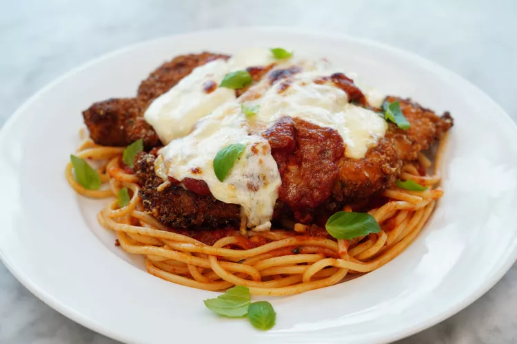

Chicken Parmesan is no doubt the most popular non-pasta dish in Italian-American style restaurants. And while this delicious meal may seem fancy, it's actually pretty easy to make at home.
Unlike many restaurant preparations, this method doesn't overwhelm the chicken with sauce and cheese. The key to great non-soggy chicken Parmesan? Don't put any sauce under the chicken cutlets, just a little bit of sauce on top, so the breading stays relatively crisp. If you like a lot of sauce on your chicken Parmesan, that's fine, you can always serve extra sauce on the side. I also use some actual Parmesan cheese in this recipe! Curiously, most versions of chicken Parmesan only use mozzarella. Here, I'm going with a delicious mixture of fresh mozzarella, tangy Provolone and real Parmesan.